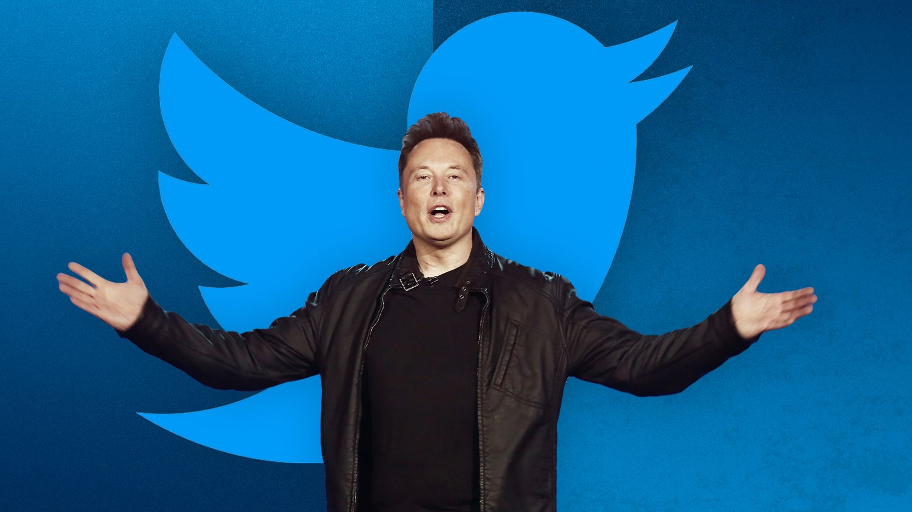
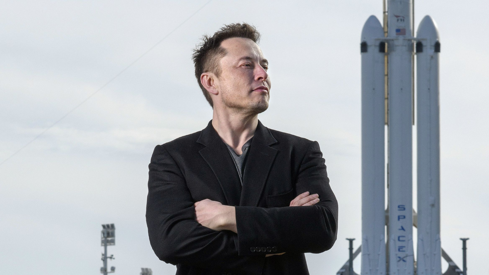
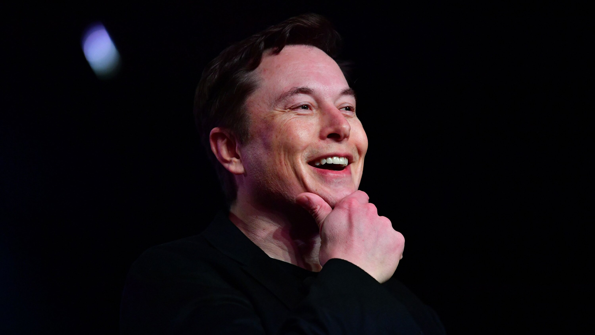

Elon Musk, the world's wealthiest individual, is known for his eccentric personality and active presence on Twitter. He frequently uses the platform to share updates about his companies, Tesla and SpaceX, his support for cryptocurrency, and his opinions about Twitter. In this website, I will examine Musk's Twitter style and investigate potential links between his tweets, relevant stock prices, and Google search trends.

This section will examine Elon Musk's tweeting style, covering his top five most-liked tweets, tweet frequency and interactions, tweet sentiment, and frequently used words.
Using a Python algorithm, I found Musk's top five most-liked tweets as of March 5, 2022:
1. The coronavirus panic is dumb
The coronavirus panic is dumb
— Elon Musk (@elonmusk) March 6, 2020
2. Had to be done ur welcome
Had to been done ur welcome pic.twitter.com/7jT0f9lqIS
— Elon Musk (@elonmusk) October 19, 2018
3. ur welcome
ur welcome pic.twitter.com/e2KF57KLxb
— Elon Musk (@elonmusk) February 4, 2021
4. My 14-year-old son, Saxon, said he feels like 2021 will be a good year. I agree. Let us all make it so.
My 14-year-old son, Saxon, said he feels like 2021 will be a good year. I agree. Let us all make it so.
— Elon Musk (@elonmusk) January 9, 2021
5. You can now buy a Tesla with Bitcoin
You can now buy a Tesla with Bitcoin
— Elon Musk (@elonmusk) March 24, 2021
Next, I generated graphs to depict Elon Musk's tweet frequency:
The visualizations display Elon Musk's tweet frequency categorized by month (1-12) and day (1-31). Upon examining the Tweet Frequency vs. Month plot, we observe that Musk is most active on Twitter during July and May, respectively, while his tweet frequency tends to be higher in the first half of the year compared to the second half, with September seeing the least amount of tweets. In terms of individual dates, the Tweet Frequency vs. Day plot indicates that the 25th of each month is his most frequently used day to tweet. The plot displays a relatively uniform distribution, indicating that Musk maintains a consistent tweeting pattern throughout each month.
Then, I generated graphs to depict Elon Musk's Twitter Twitter interactions:
The following visualizations depict Elon Musk's Twitter activity in terms of likes, retweets, and replies from 2010 to March 2022. The upper plots display the distribution by year, while the lower plots break down the distribution by day. Interestingly, the likes, retweets, and replies exhibit similar trends in both the upper and lower sets. The plots reveal that Elon Musk's popularity on Twitter skyrocketed, particularly from 2016 onward. Moreover, his Twitter interactions are on track to surpass previous years' records and reach new heights in 2022.
I utilized two popular sentiment analysis tools, VADER and TextBlob, to investigate the sentiment of Elon Musk's tweets;
The two graphs employ different sentiment analysis techniques to evaluate
the emotional tone of Elon Musk's tweets. The upper graph, Tweet
Subjectivity vs. Polarity, utilizes the TextBlob sentiment analyzer to
produce two scores per tweet: subjectivity, which gauges the level of
objectivity or opinion in the tweet, and polarity, which measures the
degree of emotional positivity or negativity. Hovering over a point on the
plot allows you to view the corresponding tweet. On the other hand, the
Tweet Frequency vs. VADER Polarity graph employs the VADER (Valence Aware
Dictionary and sEntiment Reasoner) analysis to display the frequency of
positive or negative sentiments with scores ranging from -1 to 1. VADER is
optimized for social media data.
Both graphs demonstrate that Elon Musk predominantly tweets with positive
sentiments. The upper plot displays an approximately inverted bell curve,
with the majority of his tweets centered around zero subjectivity and zero
polarity. The data on the lower plot is skewed to the left, with the
highest concentration of tweets receiving a VADER score between +0.4 and
+0.45. An independent Python calculation reveals that using TextBlob, the
ratio of positive to negative tweets is 3.59, while with VADER, it is
3.30. These findings further emphasize that Musk's Twitter account has a
higher concentration of positive tweets than negative ones.
Here, I generated a WordCloud to visualize the most frequently used words in Elon Musk's tweets:

The four word clouds above shows Musk's most commonly tweeted words among all his tweets, his positive tweets, his neutral tweets, and his negative tweets. Common to all the word clouds is "will" being the largest and "Tesla" being the second largest. These results make sense as Musk is a visionary constantly concerned with the future. Tesla is one of his main efforts to make his vision a reality through the production and advancement of electric vehicles. Also common to all the word clouds are words relating to his companies Tesla and SpaceX, such as "car," "rocket," "model," and "Starship."
This section will explore the impact of Elon Musk's tweets on four stocks: Bitcoin, Dogecoin, Tesla, and Twitter:
The above set of graphs display the normalized stock price and moving
50-day average for four relevant stocks: Bitcoin, Dogecoin, Tesla, and
Twitter, along with the frequency of Musk's tweets related to each stock.
The time ranges for each graph are selected based on the relevance of the
stock and Musk's tweets.
The Bitcoin graph reveals a clear correlation between Musk's Twitter
activity and Bitcoin's stock trends. From late 2020 to late 2021, Musk's
tweet frequency related to Bitcoin increased around the same time as
Bitcoin experienced rapid gains and losses. For instance, on May 12, 2021,
when Musk announced via Twitter that Tesla would no longer accept Bitcoin
as payment, the cryptocurrency's value plummeted by nearly 15%.
Similarly, the Dogecoin graph also depicts a correlation between Musk's
tweets and the cryptocurrency's stock trends. Between January and May
2021, leading up to Dogecoin's peak in May, Musk tweeted about it with
high frequency. In fact, Dogecoin surged by 50% after Musk tweeted
"Dogecoin is the people's crypto" accompanied by a doge-themed image:
ur welcome pic.twitter.com/e2KF57KLxb
— Elon Musk (@elonmusk) February 4, 2021
The Tesla graph displays a similar pattern of sporadic tweet frequencies
and Tesla prices. Although there appears to be no obvious correlation in
the visualization, examining specific instances lends credence to a
correlation between Musk's tweets and Tesla's stock price. For instance,
on May 1, 2020, Musk tweeted "Tesla stock price is too high imo," causing
Tesla's stock to drop 10% soon after. Additionally, on April Fools Day
2018, Musk tweeted that "Tesla has gone completely and totally bankrupt,"
resulting in Tesla's stock falling by over 8%.
The Twitter graph shows little correlation between his tweets and Twitter
stock. However, given Musk's recent acquisition of Twitter, more recent
data may reveal a correlation.
This section will explore the impact of Elon Musk's tweets on Google Search trends for five search words: "Bitcoin", "Dogecoin", "Elon Musk", "Tesla", and "SpaceX":
The graphs above illustrate the normalized Google Search trends for
"Bitcoin," "Dogecoin," "Elon Musk," "Tesla," and "SpaceX," along with
Musk's tweet frequency for each topic.
The Bitcoin graph exhibits a strong correlation between Musk's tweets and
Bitcoin's search popularity. Most of Musk's highest tweet frequency days
align with local maximums in Google searches for Bitcoin.
Similarly, the Dogecoin graph also shows a correlation between high Google
search trends and high frequencies of Musk's Dogecoin tweets. Local
maximums in searches after July 2021 align with a number of Dogecoin
tweets.
In contrast to the other four graphs, the Elon Musk graph plots the
frequency of all his tweets. Interestingly, the highest peak in tweet
frequency aligns with the highest peak in Google Search trends. However,
this visualization has a sporadic distribution and makes it difficult to
discern a clear correlation.
The Tesla graph demonstrates a slight correlation between Musk's
Tesla-related tweet frequency and Tesla search trends. As Musk's tweet
frequency increased over time, search trends generally increased as well.
Leaps in search trends coincided with leaps in tweet frequency during
March 2018, April 2019, Feb 2020, Jul 2020, Nov 2021, and April 2022.
Finally, the SpaceX graph indicates no correlation between search trends
and Musk's SpaceX-related tweet frequency. Despite a massive number of
tweets from April 2018 to April 2020, SpaceX search trends saw no
significant change.
Elon Musk is undoubtedly a one-of-a-kind individual. His Twitter account is known for its humor, visionary ideas, and the ability to impact financial markets with his tweets. With his recent acquisition of Twitter, it's clear that Musk is taking things to a whole new level. As a highly influential and powerful figure, we can only anticipate what he has in store for the future.